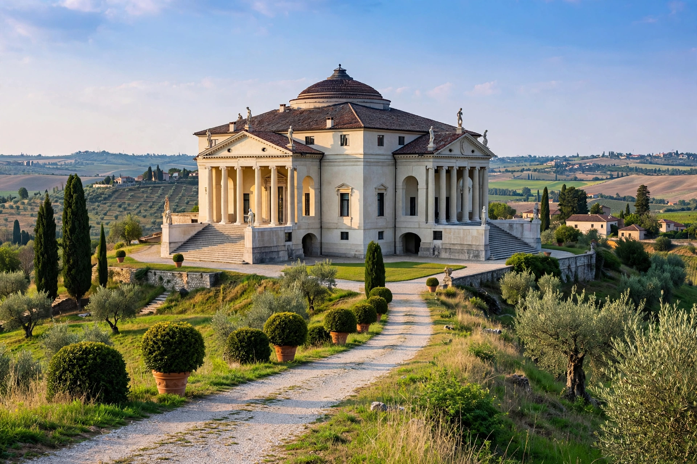

Palladian architecture

Palladian architecture is a European architectural style derived from the work of the Venetian architect Andrea Palladio (1508–1580). Characterised by symmetry, proportion based on classical Roman models, temple-front porticoes and the "Palladian window" (a central arched opening flanked by two rectangular ones), it spread from the villas of the Veneto across Europe and the Americas and remains influential today.
Palladio's originals
Palladio's villas — such as the Villa Rotonda and Villa Barbaro — adapted Roman temple forms to country houses, with piano nobile living floors raised over rustic service basements. His treatise I quattro libri dell'architettura (1570) codified the classical orders and his proportional system, making the style exportable through print.
Spread
In England, Inigo Jones introduced Palladianism in the early 17th century (Queen's House, Greenwich; Banqueting House, Whitehall). After a Baroque interlude, a self-conscious Palladian revival led by Lord Burlington and Colen Campbell in the 1720s defined the Georgian country house. The style crossed the Atlantic: Thomas Jefferson's Monticello and the University of Virginia are American Palladian monuments, and Palladian forms shaped plantation houses and public buildings throughout the early republic. Echoes persisted in 20th-century Neoclassicism and even postmodernism.
The historic centre of Vicenza and the Palladian Villas of the Veneto are a UNESCO World Heritage Site.
See also: Andrea Palladio, Venetian window, Georgian architecture, Inigo Jones.